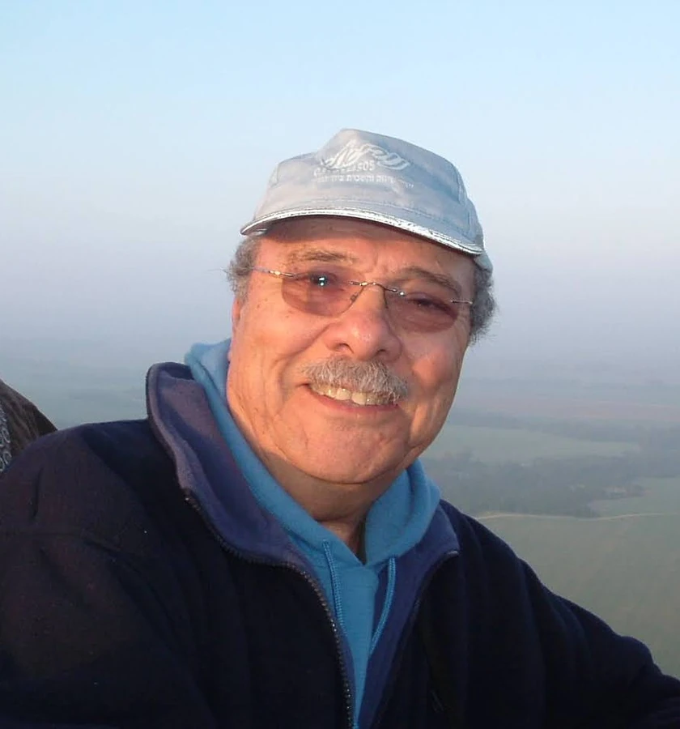

נחל עוז
רון שלמה צבי ז"ל
ממייסדי נחל עוז, חבר קיבוץ, איש עבודה, תרבות ומשפחה
סיפור חיים
שלמה צבי, בנם של שרה ושמואל רוזנצווייג, נולד בתל אביב ביום י״ט בכסלו תרצ״ט (12.12.1938). אח של יגאל.
הוא גדל והתחנך בתל אביב - בבית הספר היסודי "המרכז" ובתיכון מקצועי. לאורך שנותיו בתיכון היה חניך פעיל בתנועת הנוער "התנועה המאוחדת" ובמסגרתה יצא למחנות עבודה בקיבוצים.
כהמשך ישיר לכך, לאחר סיום לימודיו התגייס לצבא ושם שירת שירות קרבי בנח״ל המוצנח כחלק מגרעין "רגבים" שהתיישב בקיבוץ נחל עוז בשנת 1957. חבריו ומפקדיו העידו שהיה סייר מוכשר באופן יוצא דופן, וככזה נשלח לקורס סיירים. גם בשנים שלאחר מכן אהב לטייל בארץ והכיר אותה לאורכה ולרוחבה.
כשהגרעין שלו התאזרח וקבע את מקומו בנחל עוז שלמה הפך לחבר הקיבוץ. על ימי העבודה הראשונים שלו שם הוא כתב במיזם "הקשר הרב-דורי" של המשרד לשוויון חברתי שפורסם ב-22 ביוני 2023: "היינו בגרעין הנח״ל, בחלקו האחרון של המסלול הצבאי לאחר האימון המתקדם בגדוד הנח״ל המוצנח, לקראת שחרור, ומחוזרים על ידי שני קיבוצים כאשר האחד מהם הוא נחל עוז. בחרנו בנחל עוז בגלל ההילה ההרואית שהייתה סביבו אז והקרבה לגבול וגם משום שהייתה קריאה של המוסדות המיישבים לרדת לנגב, שהובלה על ידי בן גוריון."
שלמה המשיך ותיאר כיצד הגיע כנער צעיר אל עבודת הרפת, בניית מלבני הקש וההכשרה על טרקטור "די-פור" - תחילת דרכו כפלאח בקיבוץ. הוא סיפר בגאווה על עבודת הכפיים, על החברות ועל תחושת הסיפוק של דור המייסדים הצעיר.
בקיבוץ הכיר שלמה את חנה, שנולדה וגדלה בקבוצת כנרת והגיעה לנחל עוז לשנת שירות שלישית. השניים נפגשו ואהבתם פרחה. בשנת 1965 הם נישאו, ובמהלך השנים נולדו ילדיהם ענת, אביטל ואביב. שלמה התמסר לבית ולמשפחה והיה בעל ואב דואג, מסור ומשקיע.
במשך השנים עבד בנחל עוז במטעים, במפעל ובמסגריית הקיבוץ. בשנות השמונים שימש כמנהל האדמיניסטרטיבי של "בימת הקיבוץ" - תיאטרון הקיבוץ - תפקיד שהלם אותו בתור מי שהיה גם שחקן מוכשר וזמר חובב שהופיע בקיבוץ ובהפקות תיאטרון אזוריות.
בשנות התשעים, עם תהליכי ההפרטה בקיבוץ, השלים תואר הנדסאי מכונות במכללה הטכנולוגית "רופין" בעמק חפר, וגם סיים בהצלחה קורס קבלני בניין ושימש כמפקח בנייה וכקצין בטיחות בחברת "בוני התיכון" עד לפרישתו לפנסיה.
כשבגרו ילדיו ונולדו ילדיהם הוא היה לנכדיו סבא אוהב ואהוב. שלמה היה איש ספר והגות, ולאורך השנים הקפיד ללמוד במסגרות שונות לימודי העשרה - בשנותיו האחרונות למד פילוסופיה ומדעי הרוח כסטודנט חופשי במכללת ספיר. בנוסף היה אומן מוכשר ואהב לצייר ולפסל בחמר.
שבעה באוקטובר
בשבת כ״ב בתשרי, שמחת תורה תשפ״ד, 7 באוקטובר 2023, בשעה שש וחצי בבוקר, החלה מתקפת הטרור על יישובי עוטף עזה. לקיבוץ נחל עוז הגיעו עשרות מחבלים, פרצו לבתים, רצחו תושבים וחטפו אחרים לרצועת עזה.
באותה שבת הבנות של שלמה וחנה שהו איתם בקיבוץ בדירה צמודה. איתן היה הנכד ירדן, שבהשראתו של סבא שלמה עלה לארץ מאנגליה כשנה לפני כן בגרעין "צבר" של הסוכנות היהודית, ומאז שירת בצה״ל כחייל בודד.
כשהתחילה המתקפה נכנסו כולם לממ״ד. שלמה לא הספיק להיכנס לממ״ד עם רעייתו, ובסביבות השעה 10:30 מחבלים ירו בו למוות מבעד לחלון המטבח, בעודו יושב על הכורסה בסלון.
שלמה צבי רון נרצח על ידי מחבלים בביתו בקיבוץ נחל עוז בכ״ב בתשרי תשפ״ד (7.10.2023), בן שמונים וארבע במותו. הוא הובא למנוחות בבית העלמין בכנרת, בשורה 19. הותיר אחריו אישה, בן ושתי בנות, נכדים ואח.
זיכרון והנצחה
על מצבתו כתבו אוהביו: "איש טוב לב, מסור למשפחתו, אוהב אדם ושוחר דעת".
"גבורתו לא הייתה בהקרבה ובמותו אלא בחייו", כתבה הבת אביטל, "בכך שלקח חלק בהגנה על הגבול וביישוב הנגב, בתרומתו לחברה הישראלית כלוחם, כחבר קיבוץ, כאיש עבודה ומשפחה מוסרי ונאמן שעד הרגע האחרון האמין במדינה ובצבא".
הבת ענת הוסיפה: "הבית והמשפחה היו הדבר הכי חשוב עבורו והיה מסור ונאמן להם עד לרגע האחרון בחייו".
שלמה צבי מונצח באנדרטה לחללי פעולות האיבה בהר הרצל, בלוח מס׳ 94.